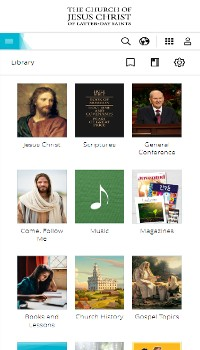
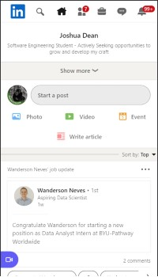

Repetition
Church of Jesus Christ of Latter Day Saints
churchofjesuschrist.org Repetition is used on this page to help distinguish specific elements as apart of groups with certain functionality. For example, the nav icons are in the same graphic style, color, and size. Another example, the library icons repeat the same size and font-style.
Alignment
Linked In
linkedin.com Alignment is used on this page to enhance readability. Most elements that include text have the text aligned to the left. This makes it easier and more natural to begin and continue reading. The text area for users to create a post is also slightly aligned to the left.
White Space
W3Schools
w3schools.com
White space is used to seperate the various elements on the page. It gives every element a clear identity and improves readability. There is lots of paddings within the larger squares and within the smaller ovals. There is also spacing between each element in the square.